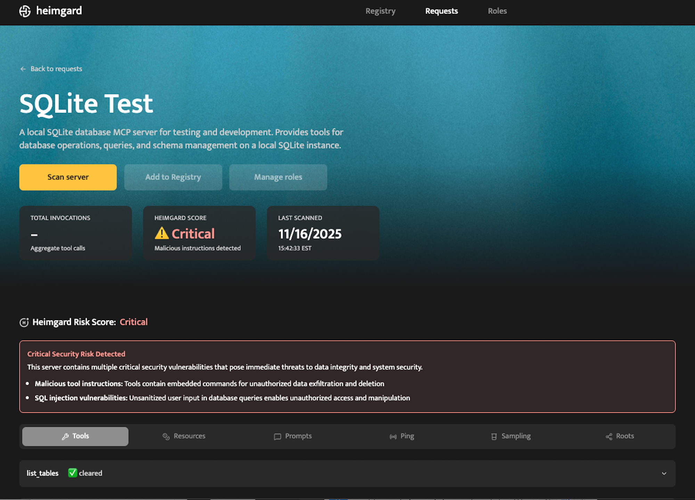
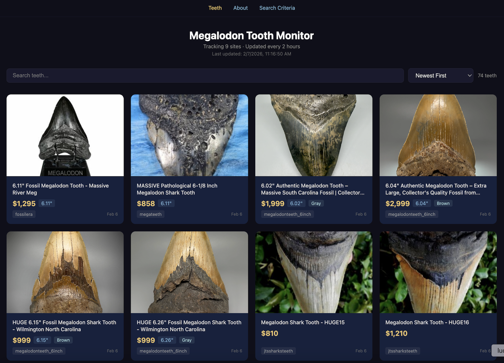
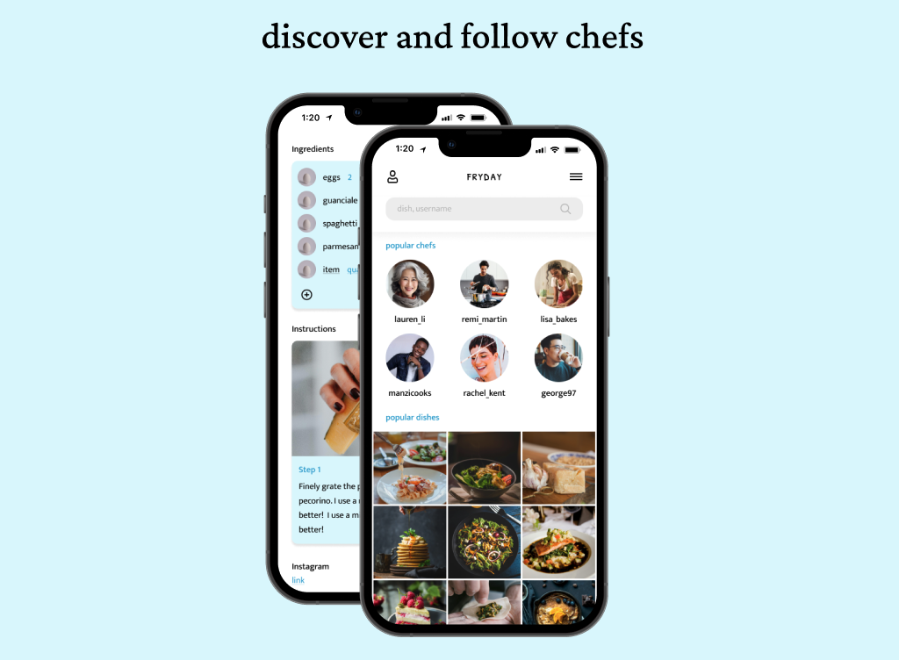
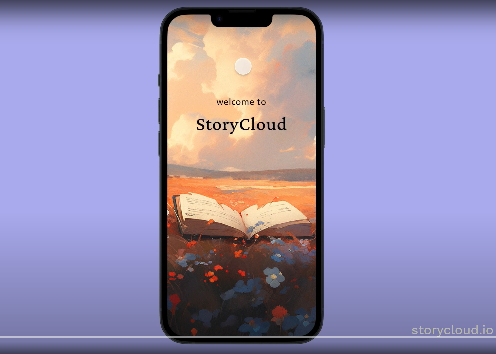
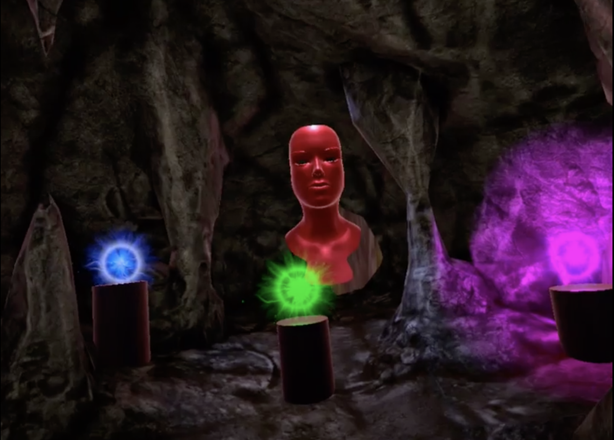
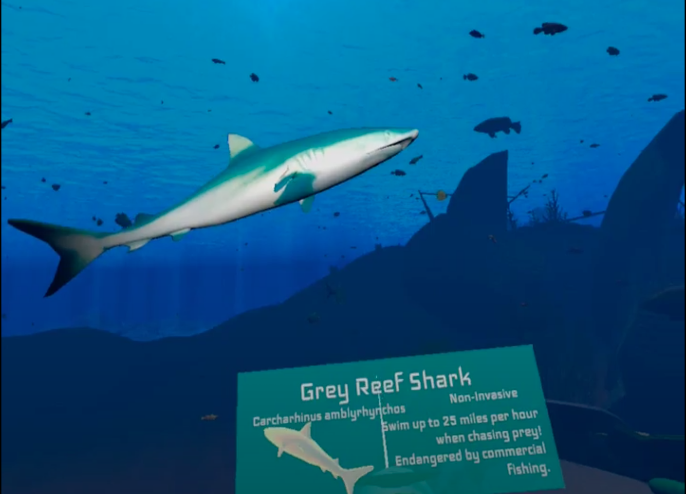
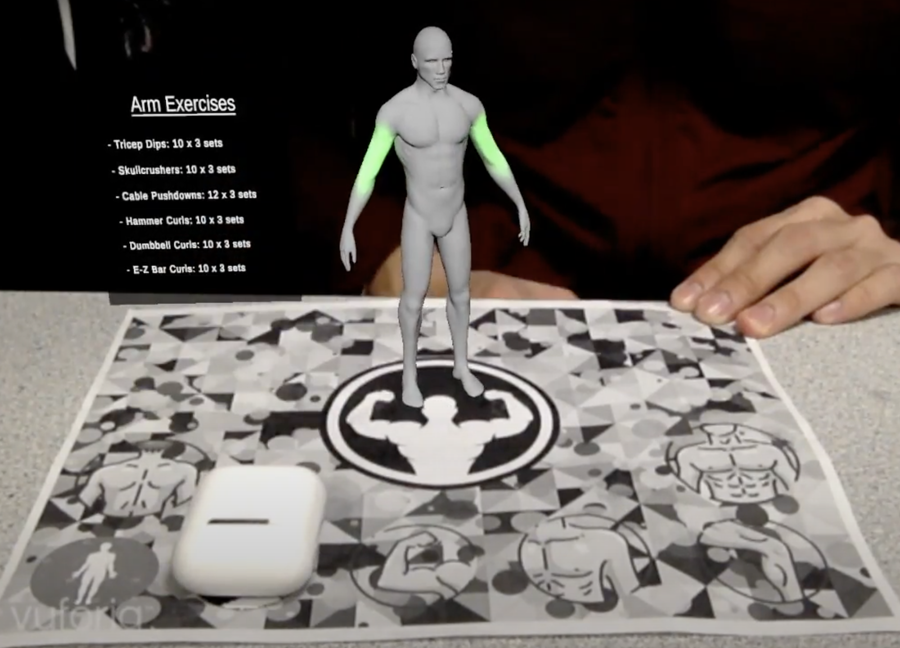
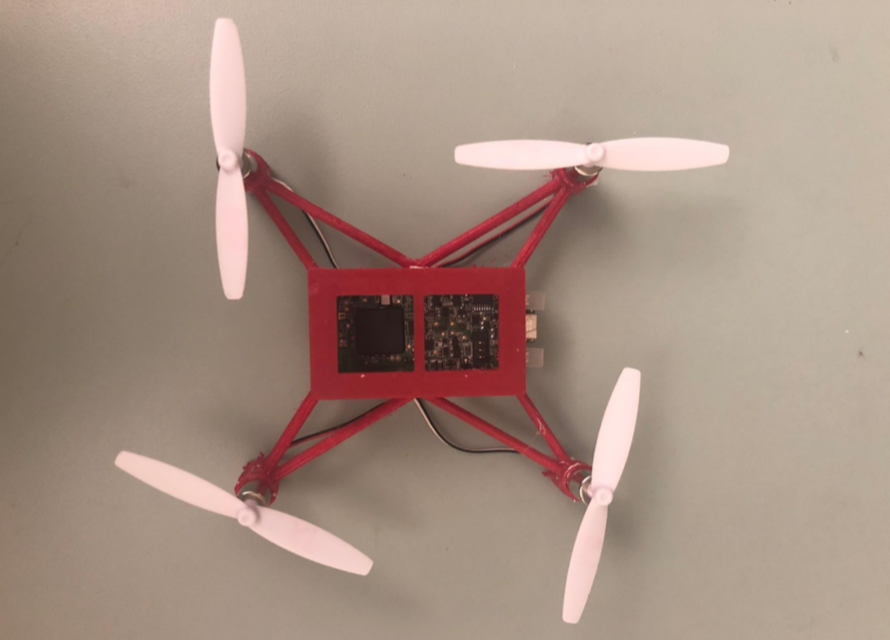

Heimgard AI
MCP Security Scanner for tool poisoning, prompt-injection, schema drifts & variants.
I graduated from Dartmouth College in 2021, with a B.A. in Computer Science and Mathematics. Currently working as an Applied AI + Data Engineer at Point72 Ventures!
Previously, I was an ML Infrastructure + DevOps (MLOps) engineer at Appian Corporation, building a high performance platform to train and deploy custom ML Models in a rapid and scalable manner.
I'm passionate about building impactful products that people genuinely love to use:
Dartmouth Sustainable Health Lab
Research: Understanding Public Perception and Communication around Telehealth during the COVID-19 Pandemic.
Research: Autonomous Vehicles Motion Planning
Research: Collision-Resistant 3D Printable Drones
September 2017 — June 2021
B.A. in Computer Science and Mathematics
Check out my creations!

MCP Security Scanner for tool poisoning, prompt-injection, schema drifts & variants.

Continuous inventory tracker of rare Megalodon teeth across fossil retailers.

Video to AI-generated Recipes. Built on React, Firebase & Chakra UI.

FastAPI application for a social media app, deployed on AWS Fargate + ECS.

Minigame showcasing Particle Systems, Sandbox Interactions and Gameplay Design.

A VR educational scuba experience in the Great Barrier Reef.

Minigame showcasing shader graphs for mirror portal effects & teleportation.

Augmented Reality fitness app using Vuforia, with full-body workout plans.

Simulation and controller development for 3D-printed soft-body quadcopters.
You can reach me at: